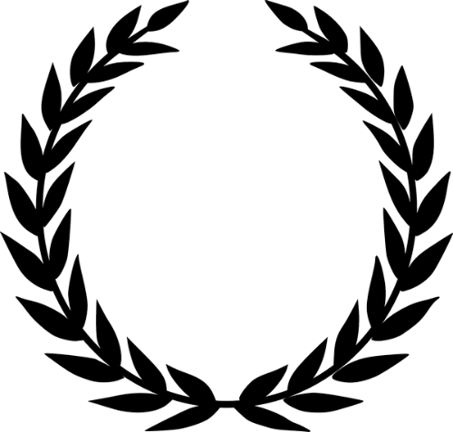

2. SECUENCIA COMPETENCIAL
Sesión 1
La Ruta de Eneas

Sesión 2
Locos por los clásicos: la Eneida
Sesión 3
Eneas, vínculo mitológico e histórico entre Troya, en Asia Menor, y la fundación de Europa
Sesión 4
Eneas, legado clásico de la identidad y los valores europeos
Sesión 5
Eneas, símbolo de la humanitas europea
Sesión 6
Presentación de los productos finales
Sesión 7
Evaluación final